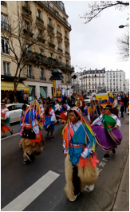
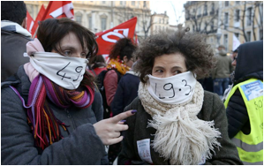
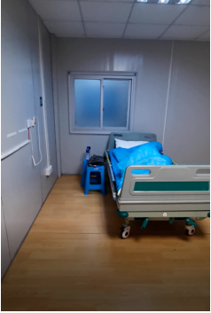
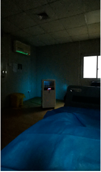
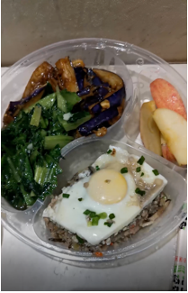

地球青年丨亲历法国“封城”一周，我在家与邻居隔墙弹奏
原文链接 备份链接 以下文章来源于地球青年图鉴 ，作者地青 春节过后，常居法国的导演、航海旅行者尔尼从成都回到巴黎，当地时间3月16日晚间，法国政府宣布从17日中午开始，禁止民众非必要的出行和集体活动。法国进入“封城”阶段，全境民众居家 …
当我看到自己坐的是救护车时，感觉眼前都要黑了，我问护士“我是阳性吗”，她说去那边就应该是疑似。
记者 | 吴 雪****
受访者 | 帕 子****
我在法国巴黎一所私立大学留学六年，想当设计师、酷爱短视频创作，租住在学校附近的一处小公寓。疫情在中国暴发后，我就做好了留守巴黎的长期准备，即便后来周围大部分同学都回国了。1月30日，我预见性地去超市囤了一个月的口粮，把蔬菜、水果塞了满满一个冰箱，还囤了些卫生纸，取消了安排好的聚餐、集会。但法国政府与媒体宣传年轻人患病比例非常低，我周围的法国朋友对此不以为然。

1月30日，帕子在法国超市囤货时，未出现断货情况

超市里的面粉货架帕子也囤了几袋
那时，法国正处在疫情初期，1月25日，法国出现了第一例确诊病例，是来自西南部城市波尔多住院的患者，客观来讲，法国政府及时严控与治疗，控制得还算不错。政府要求所有从疫情严重地区返法的民众自行隔离14天，有症状者拨打急救电话15，不可自行去家庭医生处。确切地说，3月以前，学校没有停课、游行还在进行，生活也没太大变化。
国内疫情暴发时，帕子曾跑遍了巴黎买口罩，并呼吁华人支援武汉
2月25日最后一名患者出院，法国医院已经没有新冠肺炎病人。看起来，法国基本控制住了输入性病例在当地的传播，大家以为终于可以松一口气了的时候，邻国意大利突然病例数快速增长，法国紧接着也陷入了“一个世纪以来最严重的公共卫生危机”。
疫情暴发时，房东把我赶了出来
我看到米兰时装周和足球赛结束后，那批人涌入到了巴黎继续嗨，就预料到法国不久会有暴发的可能性，我成了路上唯一戴口罩的行人，路人看着我，一脸惊恐，偶尔还有窃窃私语。最近《三体》里的那句话很火，我在想如果有人质疑我，我准备拿这句话应付他：弱小和无知不是生存的障碍，傲慢才是。

法国巴黎狂欢节
3月的巴黎，每天看着感染人数不断缓慢上升，周围人一点也感受不到危机，依然继续聚会、继续看展、继续派对。法国总统甚至做出表率，携妻子去剧院看戏，鼓励民众不用害怕病毒，更不用改变出门享受生活的习惯。我告诉家人自己一个人在巴黎，能管好自己，让他们勿挂念。但事情在3月1日，发生了转折。
那天，我突然接到房东的电话，没有预兆的，对方说要把房子收回，一家人全部搬过来住。房东是巴黎一家餐馆老板，聊了下才知道，因为受疫情影响，餐馆亏损，被迫转让。按理说，每年冬天11月1日到次年3月15日为巴黎的冬歇期，这个期间，寒流肆虐，无论任何理由，房东都是不可以驱逐房客的。我也可以大大方方地提出不搬走。

在法国巴黎帕子租住的公寓楼
一开始房东让我慢慢找，我想着慢慢找的话时间上还来得及。但到了3月4日，房东改口说3月19日前必须要搬走，因为合同到期了。我当时就蒙了，要知道，法国对租客有一定的保护，房东取消合同必须提前三个月，亲自写挂号信给到租客，双方同意，才具有真正意义上的法律效果。但我选择不纠结这个事情，为什么，如果迟早必须搬走的话，就一定要去找房子，找房子就意味着满大街跑，坐公交车、接触中介、预约房东等，如果找不到，露宿街头也是有可能的，对我个人来说，风险太大。

在马赛的游行聚集了数百人。图片来源：《巴黎人报》
我果断决定回国，那时机票还没有翻倍涨价，我花了7000多元在APP上定了3月6日的机票，并用一天的时间收拾了一些重要物品，把剩下的家具、物资全部送给了朋友。虽然知道回国后需要隔离，但我实在没有别的办法。我老家在甘肃，但因为我本科是在广州读的，集体户口也在广州，因此必须回广州办理身份证，然后再去深圳投奔朋友，回国路线是从曼谷转机回国。
回国后 我被隔离的一波三折
当时巴黎戴高乐机场，基本没人管这个事情，机场除了亚裔面孔没人戴口罩。入关之前、之后，都不会有人给你测体温，做登记。但在我所乘坐航班的泰国航空登机口，工作人员却全部戴了口罩，登机之前，用酒精消毒，很严格。飞机上，有各个国家的乘客，包括意大利。防护上面没有看到特别的，但在飞行途中的12个小时，我没敢摘下口罩吃一口饭。
到了曼谷机场，所有人都必须要测体温，后来落地广州，气氛明显紧张起来。因为当时法国还不是疫情国，下飞机之前，机组人员通过广播念了同乘的意大利人员名单，并示意这批人先从飞机中部的出口出去，其余人通过海关，测体温、进行核酸检测。

帕子落地广州白云机场进行防疫检测
一下飞机，空气“唰”一下子凝固了，每个人粗气都不敢喘一个，排着队填写自己的信息，当时我紧张到连回国记录视频都没有拍。更紧张的是，到了测量体温的地方，我放下背着的大行李，测的体温是37℃。我心里一阵慌乱，安慰自己可能是肌肉发热，结果过了几分钟，测了第二次，体温恢复正常36.5℃。
考虑到疫情影响，我并没有直接去深圳找朋友，而是在机场附近找了一家酒店，自我隔离了一个星期。朋友说，帮忙联系了小区对应的隔离酒店，经过一系列流程后，可以入住。3月15日，我乘坐高铁前往深圳，到了之后，事情又发生了变化，当时广州还未出台凡是境外人员，无论任何国籍，一律实施14天居家或集中隔离医学观察的规定。但为了安全起见，社区建议我先去医院统一进行核酸检测。

帕子入住的隔离医院
当天傍晚，我找到就近的一家医院——华中科技大学协和深圳医院，大致说明了回国情况，医生带我到医院临时搭建的一处隔离板房，那里全部是针对发热发烧的疑似人员， 测体温、挂号、抽血、咽拭子检测、做CT，做完之后，我就被安排在了这家医院的一个隔离房间，房间里有床有电有凳子，还有一个空气消毒机给我用。
医生说核酸检测大概晚上一两点出结果，如果没人来找我就是好结果，如果半夜来找的话……当时我不敢往下想，智商基本为负，脑袋一片混乱。但说实话，回国后我感受到祖国对我们还是很重视的。等待的这一晚，我一眼没合，就担心自个儿会被从睡梦中叫醒通知那个坏消息。时间到了凌晨三点，卡在嗓子眼的那颗心，才像背了降落伞一样慢慢落了下来。

回国第一夜等待核酸检测结果，我担心了一晚上
我在医院接受隔离
睡了一觉醒来，我还挺开心的，早上打开门把早餐拿进来，愉快地吃完了早餐，正准备给家人朋友汇报好消息时，护士就敲门进来了，她说：“马上收拾东西去另外一家医院。”我困惑地问她什么意思，她说去那边就说明情况比较严重。我正在发“好消息”的双手，还是硬着头皮发完了一个个“好消息”，我没有告诉他们真实的状况，怕他们担心。
但当我看到自己坐的是救护车时，感觉眼前都要黑了，我问护士“我是阳性吗”，她说去那边就应该是疑似。那一刻完全释然了，最坏的结果就是阳性，然后隔离治疗嘛。如果是最坏的结果，也只能坦然接受。
我上了救护车
法国“封城”我也不打算回去了
入住到新医院的病房，我突然收到了前医院的短信通知，结果为阴性，这边的医生也告诉我不要怕，因为我是从法国入境，需要多做几次检测而已。坐了一早上过山车的心，终于放下了。在医院隔离的这些天，感觉自己被当成了大熊猫一样看待，早上六点半护士准时响铃呼叫，让我测量体温，然后把早餐放在门口的小凳子上自取。

午餐三菜一汤
医院每天还会安排半个小时的房间杀菌，午餐三菜一汤，口味咸淡适中。房间里有一块空地，午睡起来可以进行拉伸锻炼，当然在不影响其他病友的情况下。在隔离期间，我做了四次检测都是阴性，大概率是没问题了。闲暇时间我也不忘关注法国巴黎的情况，3月16日晚上，法国总统马克龙发表电视讲话，法国将在17日正式全国隔离，只有购买生活必需品、外出就医、做运动，照顾独居老人或残疾人才能允许出门，违者将面临38欧元至135欧元的罚款。
总统一周内举行两次直播发言，这在法兰西历史上实属少见。马克龙虽然在讲话中避免使用“封城”一词，但包括法国卫生部长韦朗在内的许多官员承认，法国实际上已经进入“封城”阶段。我从周围的法国朋友那里得知，事实上，大家虽然被要求呆在家中，但也会写出各种理由出门溜达，想要“关住”法国人民并不简单。海滩和露天市场，晒太阳和购物的人群，安全距离难以保持。特别是法国卖烟的店铺，一天会接待好几波客人，刚开始戒严的24小时内，警察共开出4095张罚单。

3月17日，法国警察在盘查车辆
而在巴黎街头的超市里，经过连日的抢购，摆放意大利面、大米、面包和卫生纸的货架全都空了。唯一与其他地方不同的是，法棍是法国人的必需品，目前法国的32900家面包店在封城中破例可以每天开放，在此之前一项近百年的法律规定，面包店每周至少要关闭一天。因为在法国人看来，餐桌上没有葡萄酒可以，没有面包可不行。

药店贴出告示防疫物品已经抢购一空
截至3月25日，法国累计确诊新冠肺炎病例25233例，法国措施由“松”到“紧”，这并非完美，不可否认有其粗心大意，但其实也有一些非常有效的措施。将病患分散各地医院，缓解医疗资源的压力。同时，还出台了个体户免房租、缓交税等很具体的经济措施。对于许多在法国工作的华人，如果是自由职业者，这个月收入相比去年三月减少了70%，则可以获得1500欧的补助。
但我不打算再回到法国，之前的“全法大罢工”、“黄背心”运动，一度造成交通的瘫痪，让我难免有一点点失望。隔离期间，我买了一本法国作家加缪《局外人》的书，也正准备着手投简历，在深圳找个工作长久地稳定下来。我相信，这场疫情终将过去，人类也该学会如何在今天的时代与自然共同生存。
文中帕子为化名，图片视频未标注出处均为受访者提供


· 口述实录 | 天价机票、36小时只吃一顿饭，滞留英国的13岁女儿终于回国了
· 好戏 | 走偏的“神剧”《西部世界》，问题在第一季已暴露
· 我在海外 | 美国社区还基本正常，我不回去给中国造成负担
新民周刊所有平台稿件， 未经正式授权
一律不得转载、出版、改编或进行
与新民周刊版权相关的其他行为，违者必究


原文链接 备份链接 以下文章来源于地球青年图鉴 ，作者地青 春节过后，常居法国的导演、航海旅行者尔尼从成都回到巴黎，当地时间3月16日晚间，法国政府宣布从17日中午开始，禁止民众非必要的出行和集体活动。法国进入“封城”阶段，全境民众居家 …
原文链接 备份链接 正是千千万万“无言者”的声音，才给了我们，认识时代真相的可能。 以上视频资料 来自“云林街十七号”受访者 感谢他们的发声 “我们会乐观，我们也一定能挺过去。但是有些不能忍的，必须说出来的话，咱们不如趁此机会一吐为快 …
原文链接 备份链接 这次疫情，也让我对祖国有了更深刻的认同，突发事件面前，我们国家的组织调配能力是一流的。 记者 | 沈 林 受访人 | 胡晓琳 最近很多在海外的同胞们都在纠结一个问题：非常时期，到底应不应该回国？或许我的经验可以给他们 …
原文链接 备份链接 “ - 疫 情 之 下 - 武汉的疫情就像一簇紧簇的乌云，笼罩在每一个人的心头。但所幸，在这个受伤的城市中，在每台志愿者车里，在疲于奔波的路上，总有那么一群可爱的人，温暖着我们前线医护工作者的心。 ” 1 2020年 …
原文链接 备份链接 “ - 疫 情 之 下 - 看到爸爸如此坚强的内心和乐观的心理状态，我也充满了信心。 ” 故 事 练 习 生 习 作 第 58 篇 1月20日晚间，钟南山院士对“新型肺炎人传人”的一句肯定，让全国各地陷入对病毒 …